999 JMeter扩展Java请求实现WebRTC本地音视频推流压测脚本¶

WebRTC是Web Real-Time Communication缩写，指网页即时通讯，是一个支持Web浏览器进行实时语音或视频对话的API，实现了基于网页的视频会议，比如声网的Agora Web SDK就是基于WebRTC实现音视频通信的。与HTTP不同，WebRTC应用的主要压力是码流，JMeter没有找到提供WebRTC Sampler的第三方jar包，只能自己尝试写一个。
无头浏览器¶
正常情况是打开浏览器，打开摄像头和麦克风输入音视频流进行请求传输，测试模拟采用无头浏览器，读取本地文件作为音视频输入。
无头浏览器是指没有界面的浏览器，通过调用浏览器API来模拟操作，比如Chrome在启动时添加
--headless，就可以进入无头模式。
WebRTC是使用JavaScript编写的，在前端领域生态相对来说丰富一些，有现成可用的Node库Puppeteer来支持无头浏览器：
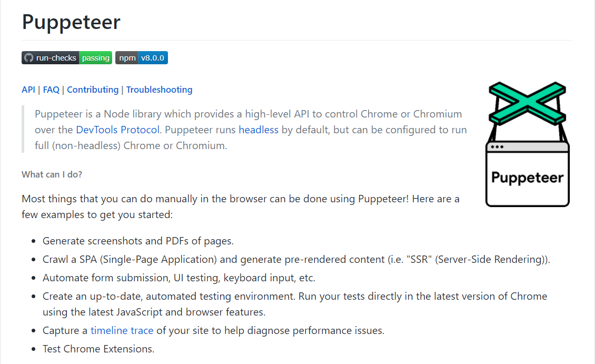
为了让JMeter能并发调用，需要编写Java代码调用Puppeteer，听着有点想象力，实际上已经有封装好的开源库了：jvppeteer。
Java代码¶
在pom.xml中添加依赖：
<dependency>
<groupId>io.github.fanyong920</groupId>
<artifactId>jvppeteer</artifactId>
<version>1.1.2</version>
</dependency>
<dependency>
<groupId>org.apache.jmeter</groupId>
<artifactId>ApacheJMeter_core</artifactId>
<version>5.3</version>
</dependency>
<dependency>
<groupId>org.apache.jmeter</groupId>
<artifactId>ApacheJMeter_java</artifactId>
<version>5.3</version>
</dependency>
jvppeteer是Java封装Puppeteer包，ApacheJMeter_core和ApacheJMeter_java用来扩展JMeter。
新建\src\main\java\App.java：
import com.ruiyun.jvppeteer.core.Puppeteer;
import com.ruiyun.jvppeteer.core.browser.Browser;
import com.ruiyun.jvppeteer.core.page.Page;
import com.ruiyun.jvppeteer.options.LaunchOptions;
import com.ruiyun.jvppeteer.options.LaunchOptionsBuilder;
import org.apache.jmeter.config.Arguments;
import org.apache.jmeter.protocol.java.sampler.JavaSamplerClient;
import org.apache.jmeter.protocol.java.sampler.JavaSamplerContext;
import org.apache.jmeter.samplers.SampleResult;
import java.io.IOException;
import java.nio.charset.StandardCharsets;
import java.util.ArrayList;
public class App implements JavaSamplerClient {
Browser browser;
public Arguments getDefaultParameters() {
Arguments params = new Arguments();
params.addArgument("chromePath", "C:\\Program Files (x86)\\Google\\Chrome\\Application\\chrome.exe");
params.addArgument("fakeVideoPath", "D:\\test.y4m");
params.addArgument("fakeAudioPath", "D:\\test.wav");
params.addArgument("isHeadless", "true");
params.addArgument("isLocalMedia", "true");
params.addArgument("isDefaultMedia", "false");
params.addArgument("meetingUrl", "https://test.io");
return params;
}
@Override
public void setupTest(JavaSamplerContext javaSamplerContext) {
String chromePath = javaSamplerContext.getParameter("chromePath");
String fakeVideoPath = javaSamplerContext.getParameter("fakeVideoPath");
String fakeAudioPath = javaSamplerContext.getParameter("fakeAudioPath");
String path = new String(chromePath.getBytes(), StandardCharsets.UTF_8);
ArrayList<String> argList = new ArrayList<>();
argList.add("--no-sandbox");
argList.add("--disable-setuid-sandbox");
argList.add("--ignore-certificate-errors");
argList.add("--use-fake-ui-for-media-stream");
argList.add("--use-fake-device-for-media-stream");
if (javaSamplerContext.getParameter("isLocalMedia").equals("true")) {
argList.add("--use-file-for-fake-video-capture=" + fakeVideoPath);
argList.add("--use-file-for-fake-audio-capture=" + fakeAudioPath);
}
boolean isHeadless = javaSamplerContext.getParameter("isHeadless").equals("true");
LaunchOptions options = new LaunchOptionsBuilder().withArgs(argList).withHeadless(isHeadless).withExecutablePath(path).build();
try {
browser = Puppeteer.launch(options);
} catch (IOException e) {
e.printStackTrace();
}
}
@Override
public SampleResult runTest(JavaSamplerContext javaSamplerContext) {
try {
Page page = browser.newPage();
page.goTo(javaSamplerContext.getParameter("meetingUrl"));
} catch (Exception e) {
e.printStackTrace();
}
return null;
}
@Override
public void teardownTest(JavaSamplerContext javaSamplerContext) {
browser.close();
}
}
App类继承了JavaSamplerClient类。getDefaultParameters()定义了JMeter界面参数。setupTest()是测试初始化，创建无头浏览器。runTest()是测试执行，访问会议URL进行推流。teardownTest()是测试清理，关闭无头浏览器。setupTest()和teardownTest()在运行时每个线程只会执行一次。
无头浏览器核心参数配置如下：
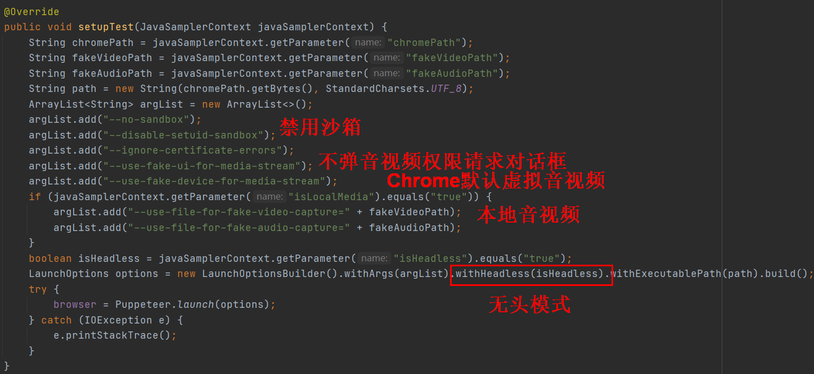
Java代码写好后，需要打成jar包提供给JMeter调用。打包过程如下：
点击右上角Project Structure：
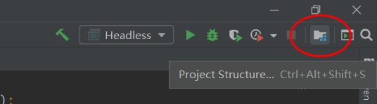
打开Artifacts，点击+号，填写名字，在右边区域双击编译后输出文件目录到左边：
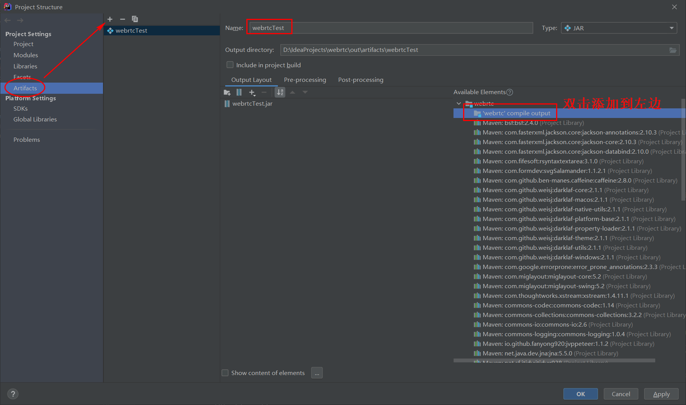
点击OK确认后，从菜单栏找到Build Artifacts点击：
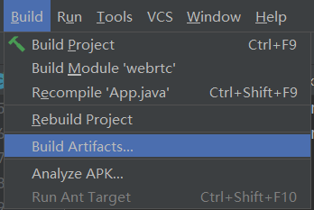
Build就可以了：
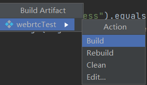
JMeter使用¶
首先需要把jar包复制到lib\ext目录下，webrtcTest.jar位置如下：
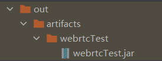
除了webrtcTest.jar，还依赖3个jar包，在Settings\Build\Build Tools\Maven找到Local repository本地仓库目录后打开，jvppeteer-1.1.2.jar存放位置如下：
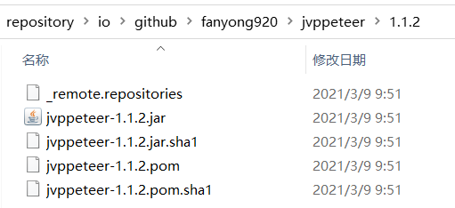
commons-compress-1.20.jar存放位置如下：
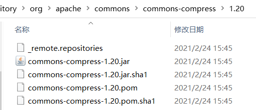
Java-WebSocket-1.5.0.jar存放位置如下：
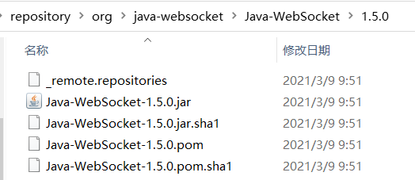
然后打开JMeter，添加线程组，添加Java请求，选择刚才创建的类，初始参数也加载出来了：
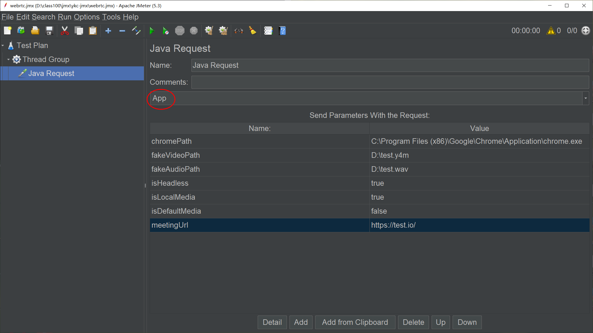
默认音视频流是这样：
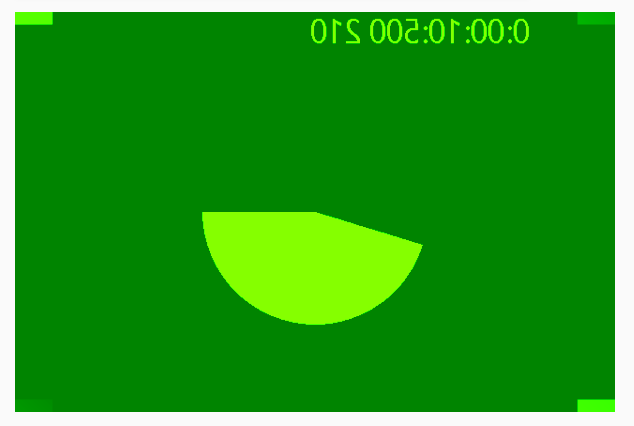
本地音视频流是这样：
脚本弄好了就可以开始对WebRTC应用进行压测了。
小结¶
本文介绍了如何使用Java对Puppeteer封装的jvppeteer，实现对WebRTC进行本地音视频流的压测脚本，打包成jar包后，可以在JMeter中进行扩展，通过Java请求Sampler来调用。Headless
Chrome对.y4m格式视频和.wav格式音频支持较好，建议用这两种格式做测试。除了这种方式外，还了解到WebRTC有个官方测试引擎Kite，可以通过Selenium
Grid来做自动化测试和性能测试，等实践后再做分享。